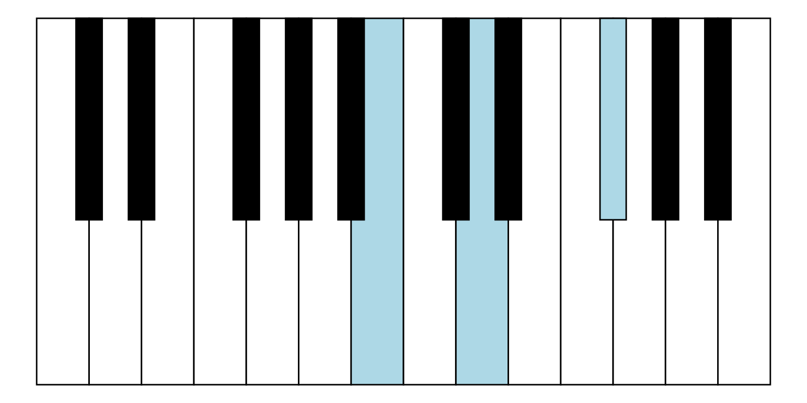
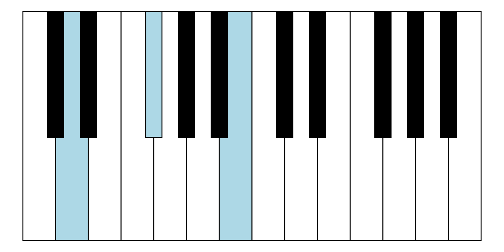

Introduction
Mikkel Meyer Andersen
2019-05-06
introduction.RmdBuilt-in data with information about some of the keys on a piano:
keys_coords
#> # A tibble: 24 x 12
#> key key_color xmin ymin xmax ymax layer tones label label_x
#> <int> <chr> <dbl> <dbl> <dbl> <dbl> <dbl> <lis> <chr> <dbl>
#> 1 1 white 0 0 0.0714 1 1 <chr… C 0.0357
#> 2 2 black 0.0536 0.45 0.0893 1 2 <chr… "C#\… 0.0714
#> 3 3 white 0.0714 0 0.143 1 1 <chr… D 0.107
#> 4 4 black 0.125 0.45 0.161 1 2 <chr… "D#\… 0.143
#> 5 5 white 0.143 0 0.214 1 1 <chr… E 0.179
#> 6 6 white 0.214 0 0.286 1 1 <chr… F 0.25
#> 7 7 black 0.268 0.45 0.304 1 2 <chr… "F#\… 0.286
#> 8 8 white 0.286 0 0.357 1 1 <chr… G 0.321
#> 9 9 black 0.339 0.45 0.375 1 2 <chr… "G#\… 0.357
#> 10 10 white 0.357 0 0.429 1 1 <chr… A 0.393
#> # … with 14 more rows, and 2 more variables: label_y <dbl>,
#> # label_color <chr>Details for drawing a diagram of a piano:
Add key labels:
Highlight certain keys:
Work with chords:
chrd <- construct_chord_raw(root_tone = "F#", distances_rel = c(4, 3))
chrd
#> F# chord with tones F#/Gb, A#/Bb, C#/Db
as.character(chrd, brief = TRUE)
#> [1] "F#"
chrd_Fsm <- construct_chord_minor(root_tone = "F#")
chrd_Fsm
#> F#m chord (minor) with tones F#/Gb, A, C#/Db
as.character(chrd_Fsm, brief = TRUE)
#> [1] "F#m"
get_keys(chord = chrd_Fsm)
#> [1] 7 10 14
get_keys_highest_tone(chord = chrd_Fsm, highest_tone = "A")
#> [1] 2 7 10Highlight chords:

Work with chord inversions:
chrd_Bm <- construct_chord_minor(root_tone = "B")
get_keys(chord = chrd_Bm)
#> [1] 12 15 19
get_keys_inversion(chord = chrd_Bm, inversion = 0)
#> [1] 12 15 19
get_keys_inversion(chord = chrd_Bm, inversion = 1)
#> [1] 3 7 12
get_keys_inversion(chord = chrd_Bm, inversion = 2)
#> [1] 7 12 15Highlight chord inversions:

